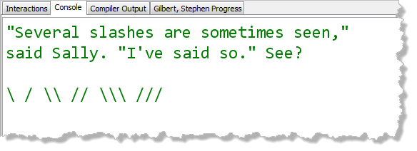
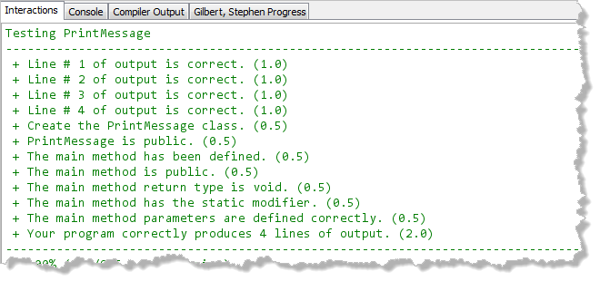

Escape sequences are a way
to represent "difficult" characters inside your source
code. For instance, if you want to create a String
that contains a newline character, you can't just press
the Enter key when typing in your code. The Enter key is a
control character, and, instead of inserting a newline
into your document, it issues the "newline command" to your
editor.
The same kind of problem occurs when you want to display a
double quote or a backslash inside a String.
You can find out how to write escape sequences in
Section 2.5.4—Escape Sequences in your
text. Read that section first, and keeping it open in your
browser as you complete this lab.
Hands On: The PrintMessage Program
The PrintMessage program is supposed to produce
output that looks like this:

Follow the same steps you used last week for H01 and for
the lab assignments, to create a traditional console-mode program
named PrintMessage. The name must be spelled
exactly like this so that the Check program can find
it. Save you code in the Week01 folder.
Here are some things you should notice:
- The first sentence of the output is surrounded with double quotes. You'll need to use the escape sequence to embed a quote for that to work.
- There are also two embedded quotes in the second sentence.
- The third line is blank. You can use
System.out.println();, with no arguments, to display a blank line. - The last line has several backslashes. However, since the backslash is the escape character in Java, you need to "escape the escape character" to produce a literal backslash. All that really means is that you need two backslashes for every one that appears in output.
Check Your Work
Test your program just like you tested your previous assignments, using the Check button.

Then, paste your results into the PDF form, save it and submit it to Blackboard.